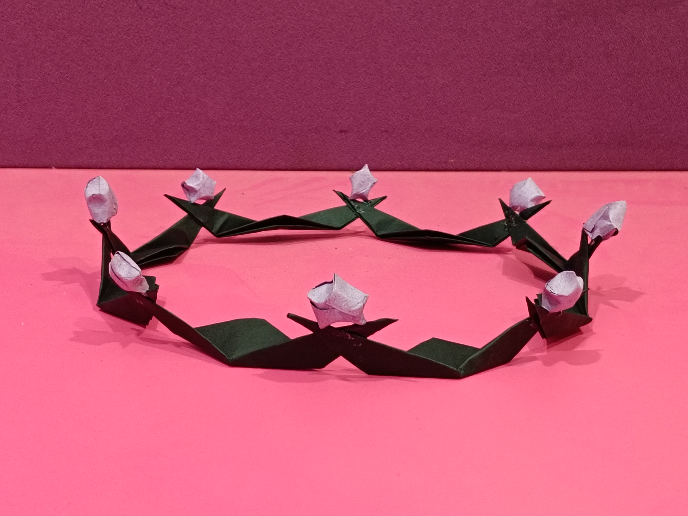

I'd love to hold your hand every single time we step on escalator 😘

hope you liked this...❤️

cute dog from your secret admirer...
i.e.ME!🤭
Don't forget: I love you more than i ever think i could...🥹✨

flowers for you baby..💐

No captions needed ig...😭🤭
THINGS I LOVE ABOUT YOU:
-....................
-....................
-....................
(YAY!!!!!Now nothing can make me unlove you!🥳)

Crown for my queen!👑
I would loveee to be the visible part of the invisible audience when you read smth interesting...😁

hehe🤗☺️😚
I love you more than maths. And that's a lot. 📏

ik,ik...not exactly what you
wanted but I coustom made it for you...
It feels nice to be around you, I don't always have to put up an act continously...